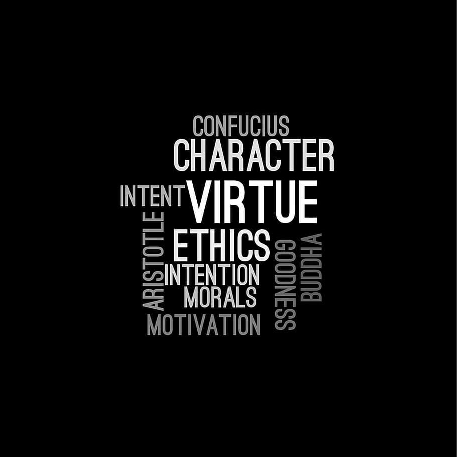

About Me
Nadia Akua Nsiah Odame is a passionate Software Engineering student at ALCHE University in Mauritius, originally from Ghana. She’s driven by a vision to use technology as a force for empowerment and inclusion especially for women and differently-abled learners.
Her journey began with curiosity about how systems work, which grew into a calling to create impactful digital solutions. Today, she’s developing her skills in Python, HTML, CSS, JavaScript, Git, Linux, and Machine Learning, with a strong focus on using AI to solve real-world problems.
Before diving into software engineering, Nadia gained hands-on experience in electrical and mechanical engineering under the mentorship of Mr. Anthony at Smart and Wise Technical Services; an experience that shaped her understanding of how hardware and software connect.
She has also shown strong leadership as a Project Manager in the ALX Pathway program, where she led her team in projects like community cleanups and environmental documentaries. Nadia later co-created LearnPod, an app supporting deaf and blind learners, and contributed to AfriX, a think tank developing tech-driven African solutions.
Her goal is to become a Machine Learning Engineer, building intelligent systems that make life better for others. Beyond her studies, she enjoys sharing ideas, creating, and playing Among Us, which mirrors her love for teamwork and problem-solving.
💡 She believes technology isn’t just about coding, it’s about creating impact.
Achievements
- Awarded for outstanding performance in Physics, demonstrating a deep understanding of the subject a passion for scientific inquiry.
- Recognized for exceptional achievement and dedication to academics.
- Certificate of participation in STMIE, showcasing innovation projects and ideas.
- Awarded a Silver Medal at the STMIE competition, recognizing outstanding innovation and creativity in STMIE.
Strengths
- Strong foundation in Physics, Chemistry and Mathematics.
- Analytical and problem-solving skills.
- Adaptability and Resilience.
- Proven ability to work effectively with others.
- Experience leading teams and projects, demonstrating the ability to motivate and guide others.
- Strong work ethic and commitment to achieving goals.
Goals

- Attain an Internship in a rputable company.
- Maintain a high level of academic achievement, striving for excellence in all my pursuits.
- Inspire, educate, motivate and mentor women into Engineering and Technology.
- Continue to develop my leadership abilities, taking on new challenges and responsibilities.